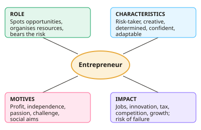

A-level Business Year 12 · Topic 2
Entrepreneurs, leadership and decision making
This topic is about the people at the top of a business, entrepreneurs, managers and leaders, and how they make decisions.
We compare leadership styles and management roles, and learn tools such as decision trees and stakeholder mapping.
Throughout, the key question is which approach works best in a particular situation.
- 8 subtopics
- 251 questions
- Free: 2.1 notes and 10 questions
In this topic
- 2.1Entrepreneurs: role, characteristics, motives and the impact on businessFree below · 27 questions
- 2.2Risk and reward, innovation, intrapreneurship and moving from entrepreneur to leaderOpen in Full Marks · 30 questions
- 2.3Management roles and functions (including Mintzberg) and the difference between management and leadershipOpen in Full Marks · 29 questions
- 2.4Leadership styles: autocratic, paternalistic, democratic, laissez-faire, the Tannenbaum and Schmidt continuum and situational leadershipOpen in Full Marks · 22 questions
- 2.5Mission, corporate objectives, strategy and tactics; the decision-making process and scientific decision makingOpen in Full Marks · 28 questions
- 2.6Decision trees, expected values, risk and uncertaintyOpen in Full Marks · 27 questions
- 2.7Influences on decisions: ethics, resources, external environment, and the use of data and big dataOpen in Full Marks · 68 questions
- 2.8Stakeholder mapping (Mendelow) and managing stakeholder conflictOpen in Full Marks · 20 questions
2.1 · Free notes
Entrepreneurs: role, characteristics, motives and the impact on business

Key points
- An entrepreneur is a person who spots a business opportunity, organises the factors of production (land, labour, capital) and bears the risk of setting up and running a business in the hope of profit.
- Economists treat enterprise as the fourth factor of production. The entrepreneur makes the key decisions, raises finance, takes on risk and often owns the business.
- Key characteristics include being a risk-taker, creative/innovative, determined and resilient, self-confident, hard-working, adaptable and showing initiative. In the exam, link each trait to the scenario rather than just listing them.
- Financial motives include profit, personal wealth and a return on investment. Non-financial motives include independence (being your own boss), job satisfaction, passion for an idea, a sense of challenge and a flexible lifestyle.
- Push factors drive people into enterprise, for example redundancy, unemployment or dislike of an employer. Pull factors attract them, for example spotting a gap in the market, ambition or a new technology.
- Social entrepreneurs put social or environmental objectives ahead of profit maximisation and reinvest surpluses into the cause. Their objectives may be satisficing (earning enough) rather than profit maximising.
- Impact on the business: the founder's vision sets the mission, objectives and culture, and early decisions shape growth. The danger is over-dependence on the founder and limited managerial skill as the firm grows.
- Impact on the economy: entrepreneurs create jobs, innovation, competition (lower prices, more choice), tax revenue and economic growth. They can also regenerate local areas.
- Risks to the entrepreneur include losing invested capital, unlimited liability for sole traders and partners, loss of income and opportunity cost. Many start-ups fail in their first few years.
- Limited liability (private limited company) protects an owner's personal assets beyond their investment. Ownership form (sole trader, partnership, Ltd) therefore affects both risk and control.
- Evaluation: success depends on more than personality. Market conditions, access to finance, planning and timing matter too. Good answers reach a judgement on which factor was most important in the context.
In more detail
- Push or pull: someone made redundant who starts a dog-walking business is pushed into enterprise, while someone who leaves a good job to launch an app they believe in is pulled.
- Founder impact: Steve Jobs' obsession with design shaped Apple's culture and products, but strong founder control can become a weakness if the founder will not delegate.
- Economic weight: small and medium-sized enterprises make up over 99% of UK businesses and employ around 60% of private sector workers.
- Exam tip: do not just list characteristics. Link each one to evidence in the case and explain how it helped or held back the business.
Practice
Entrepreneurs: role, characteristics, motives and the impact on business: 10 questions
Pick an answer to check it, or open the answer for the explanation.
1. Which is the best definition of an entrepreneur?
- A manager who carries out instructions from the board
- A shareholder who takes no part in running the firm
- An employee who manages a department for a salary
- A person who takes risks to organise resources and start a business
Show answer
D: A person who takes risks to organise resources and start a business. An entrepreneur spots an opportunity, organises the factors of production and bears the risk of the business in the hope of profit. The other options describe employees, investors or managers.
2. Which of the following is a NON-financial motive for starting a business?
- Being your own boss
- Earning dividends
- Maximising profit
- Building personal wealth
Show answer
A: Being your own boss. Independence (being your own boss) is a non-financial motive. Profit, wealth and dividends are all financial rewards.
3. Sam is made redundant and, with no other job offers, sets up a window-cleaning firm. This is best described as a:
- Pull factor
- Push factor
- Social motive
- Satisficing decision
Show answer
B: Push factor. Redundancy forces someone towards self-employment, so it is a push factor. A pull factor would be spotting an attractive opportunity.
4. Which factor of production is the entrepreneur most closely associated with?
- Land
- Labour
- Capital
- Enterprise
Show answer
D: Enterprise. Enterprise is the factor of production covering the organisation of the other factors and the bearing of risk, which is the entrepreneur's role.
5. Aisha, a sole trader, owes £40,000 when her café fails. What is the position?
- The debt is cancelled because she is not a company
- Her personal assets could be used to pay the debts
- Her customers must cover the debt
- Only her business assets can be claimed
Show answer
B: Her personal assets could be used to pay the debts. Sole traders have unlimited liability. They are not legally separate from the business, so personal assets such as savings or a home can be used to settle debts.
6. Which founder is most clearly a social entrepreneur?
- One who reinvests most profit to employ long-term unemployed people
- One who aims to maximise returns for shareholders
- One who sets up a business only to avoid tax
- One who sells franchises to maximise fees
Show answer
A: One who reinvests most profit to employ long-term unemployed people. Social entrepreneurs prioritise social or environmental aims and reinvest surpluses into them. The other options are commercial or unethical motives.
7. An owner could earn more by working longer but is happy with £30,000 profit a year. This is an example of:
- Survival objective
- Profit maximisation
- Satisficing
- Growth objective
Show answer
C: Satisficing. Satisficing means aiming for an acceptable level of profit rather than the maximum possible, often to protect lifestyle or free time.
8. Which is an accurate statement about the impact of entrepreneurs on the economy?
- They reduce tax revenue because small firms pay no tax
- They reduce innovation because they copy rivals
- They can increase competition, giving lower prices and more choice
- They always cut unemployment because every start-up succeeds
Show answer
C: They can increase competition, giving lower prices and more choice. New entrants raise competition, which tends to lower prices and widen choice. Many start-ups fail, small firms do pay tax, and entrepreneurs often drive innovation.
9. After three failed product launches a founder keeps trying and eventually succeeds. Which characteristic does this best show?
- Satisficing
- Determination
- Delegation
- Risk-aversion
Show answer
B: Determination. Persisting after setbacks shows determination and resilience, which are important entrepreneurial characteristics.
10. Which statement about an entrepreneur's impact on their business is correct?
- The founder has no influence once the firm employs staff
- Founders are always profit maximisers
- The founder only influences the finance function
- The founder's values often shape the culture and objectives
Show answer
D: The founder's values often shape the culture and objectives. Founders commonly set the mission, objectives and culture. This influence can persist as the firm grows, and it can create dependence on them.
Keep going in Full Marks
Full Marks has 27 questions on Entrepreneurs: role, characteristics, motives and the impact on business (17 more than here), set out in practice levels. You also get notes and 3D models for all 8 subtopics of Entrepreneurs, leadership and decision making, plus games, timed exams and past papers.
On your exam board
- AQATopic 2: Managers, leadership and decision making
- OCRTopic 1.1: Types of business, objectives and stakeholders, Topic 1.2: Entrepreneurs, leadership and business growth
- EdexcelTopic 1.4: Managing people, Topic 1.5: Entrepreneurs and leaders
- CambridgeTopic 1: Business and its environment, Topic 2: Human resource management